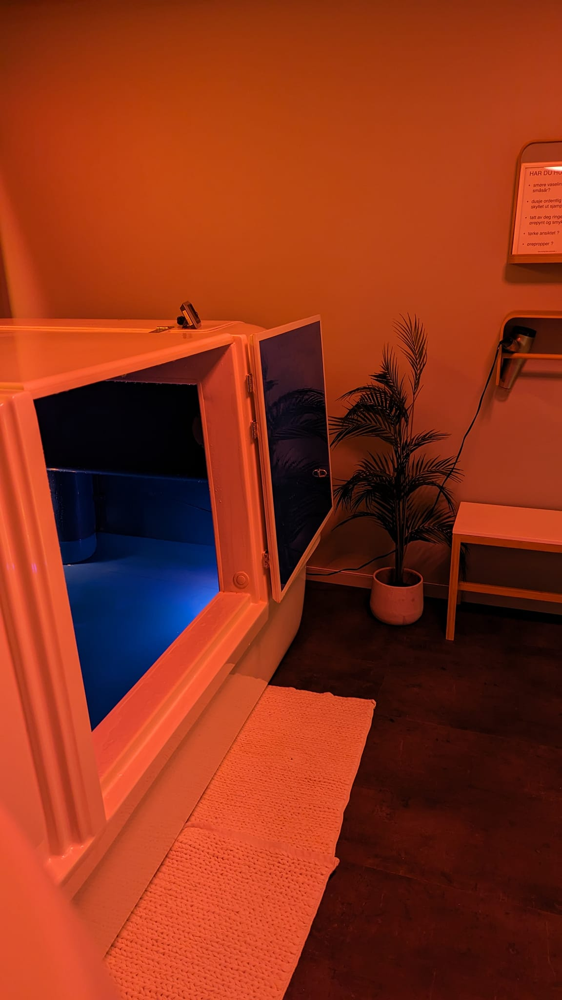

Floating Therapy
A pause from stress, noise, and tension.

Floating therapy offers 60 minutes of complete disconnection — for both body and mind. In a quiet, private tank, the nervous system is given space to slow down and reset.

What is floating?
You float effortlessly in skin-temperature water saturated with Epsom salt. Without light, sound, or external stimulation, the body enters a deeply restorative state.

Benefits
- Reduces stress and mental overload
- Relieves muscle tension and physical discomfort
- Improves sleep quality and recovery
- Enhances focus, creativity, and clarity
- Provides deep relaxation in a short amount of time
The tank is completely private, silent, and hygienic — perfect for recovery, self-care, or as a gift.
Duration: 60 minutes
Price: 690 NOK